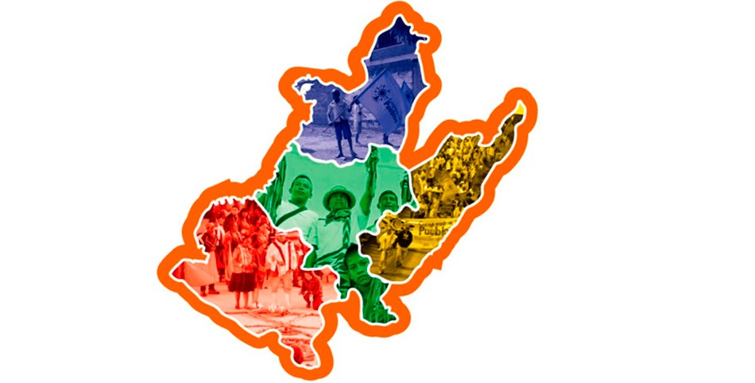

El Sur Occidentecolombiano integra los departamentos de Valle del Cauca, Cauca y Nariño . Esta región se ha caracterizado por la conjugación del accionar de los diferentes actores armados que hacen presencia y se disputan los territorios (agentes estatales, paramilitares e insurgentes), motivados por intereses geoestratégicos sobre el Puerto de Buenaventura, la salida hacia al pacífico y hacia el Ecuador. También hacia las riquezas naturales, minerales y los yacimientos de hidrocarburos que posee la zona. La implementación de megaproyectos como parte de las apuestas por el desarrollo económico del país, se está dando cada vez con mayor fuerza en territorios de titulación colectiva en donde habita población afrocolombiana.